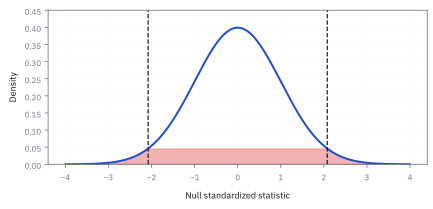
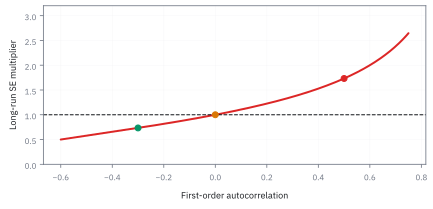

3.5 Inner Product, Angle, and Correlation
วัดความเอียงไปทางเดียวกันของลูกศรสองตัว
หุ้น A กับ B มีผลตอบแทนห้าวันที่หักค่าเฉลี่ยแล้วเป็น 1.2, −0.8, 0.5, −1.5, 0.6 และ 0.9, −0.3, 1.1, −1.2, −0.5 (หน่วย %) มองแต่ละชุดเป็นลูกศรหนึ่งอัน ลูกศรสองอันทำมุมกันกี่องศา?
เฉลย: 38.9 องศา เพราะ cosine ของมุมคือ 3.37 ส่วน 2.2226 × 1.9494 ได้ 0.778 ซึ่งคือ correlation ของสองหุ้นพอดี พอร์ต 60/40 จึงแกว่ง 1.00% ต่อวัน แทนที่จะเป็น 0.77% ถ้าสองตัวตั้งฉากกัน
Inner product คูณทีละตำแหน่งแล้วบวก ได้ตัวเลขเดียวที่บอกว่าสอง vector ชี้ทางเดียวกันแค่ไหน เมื่อหักค่าเฉลี่ยออกก่อน cosine ของมุมคือ correlation พอดี quant ใช้วัดว่าความเสี่ยงสองก้อนช่วยกันหรือซ้ำเติมกัน
ศัพท์ที่ใช้ในหัวข้อนี้
- inner product
- ผลรวมของ component-by-component products ของ vectors สองตัว ใช้วัดว่าข้อมูลสองชุดมีทิศร่วมกันมากน้อยเพียงใดและเป็นแกนของ portfolio return
- angle
- มุมเชิงเรขาคณิตระหว่าง vectors ใช้แปล inner product ให้เห็นภาพ: มุมเล็กคือเคลื่อนไปทางเดียว มุมใกล้ 180 degrees คือหักล้างกัน
- correlation
- ตัวเลขระหว่าง -1 ถึง 1 ที่วัดการเคลื่อนไหวเชิงเส้นร่วมกันของ return สองชุด ใช้เลือก diversification candidate และประเมินว่า hedge จะช่วยในสภาวะปกติแค่ไหน
- cosine similarity
- cosine ของมุมระหว่างสอง vector คือ inner product ส่วนด้วยผลคูณความยาว ใช้วัดว่าชี้ทางเดียวกันแค่ไหนโดยไม่สนว่าลูกศรไหนยาวกว่า
- orthogonal
- สอง vector ที่ตั้งฉากกัน inner product เป็นศูนย์ ใช้เรียกสินทรัพย์ที่ไม่ขยับตามกันเชิงเส้น ซึ่งเพิ่มทิศความเสี่ยงใหม่ให้พอร์ตแทนที่จะซ้ำทิศเดิม
- hedge ratio
- ขนาดของ hedge instrument ต่อ position ที่ต้องการลดความเสี่ยง ใช้แปลงความคล้ายของ return เป็นจำนวน USD notional ที่ต้อง short หรือ long
- standard deviation
- รากที่สองของ variance ซึ่งสรุปขนาดการกระจายของข้อมูลในหน่วยเดียวกับข้อมูลเดิม ใช้ปรับ return ต่าง volatility ให้เปรียบเทียบทิศทางกันได้
- variance
- ค่าเฉลี่ยของ squared deviations จาก mean ใช้วัดการกระจายและเป็นตัวหารของ regression hedge ratio เมื่ออธิบายความไวต่อ hedge instrument
- standardized return
- return ที่ลบค่าเฉลี่ยแล้วและส่วนด้วย standard deviation ใช้ทำให้ series คนละ volatility เปรียบเป็น direction เดียวกันได้โดยไม่ให้หน่วยหรือขนาดครอบงำ
- regression
- วิธี fit ความสัมพันธ์เชิงเส้นระหว่างตัวแปรจากข้อมูล ใช้ estimate hedge ratio จาก sensitivity ของ basket ต่อ hedge instrument; เรียน derivation เต็มที่หัวข้อ 15.1
- basis risk
- ความเสี่ยงที่ hedge instrument และ position หลักไม่เคลื่อนไหวตรงกัน ใช้อธิบาย residual P&L ที่ยังเหลือแม้ตั้ง hedge แล้ว
สัญลักษณ์ที่ใช้ในหัวข้อนี้
| สัญลักษณ์ | ความหมาย | หน่วย |
|---|---|---|
| $\mathbf{x},\mathbf{y}$ | vectors ของ standardized returns สองชุดในช่วงเวลาเดียวกัน | ไม่มีหน่วย |
| $\langle\mathbf{x},\mathbf{y}\rangle$ | inner product ของ vectors $\mathbf{x}$ และ $\mathbf{y}$ | ไม่มีหน่วย |
| $\|\mathbf{x}\|_2$ | L2 norm หรือความยาวของ vector $\mathbf{x}$ | ไม่มีหน่วย |
| $\theta$ | angle ระหว่าง vectors | degrees หรือ radians |
| $\rho_{xy}$ | correlation ของ return series $x$ และ $y$ | -1 ถึง 1 |
| $\mathbf{a},\mathbf{b}$ | ผลตอบแทนห้าวันของหุ้น A และ B ที่หักค่าเฉลี่ยแล้ว ตำแหน่งที่ $i$ คือวันที่ $i$ | % |
| $\mathbf{p}$ | ผลตอบแทนรายวันของพอร์ต 60/40 ที่หักค่าเฉลี่ยแล้ว | % |
| $s_p$ | sample standard deviation รายวันของพอร์ต | % ต่อวัน |
| $h$ | hedge ratio ที่คูณ notional ของ hedge instrument | ไม่มีหน่วย |
ที่มาที่ไป: จากการวัดส่วนสูงพ่อลูก สู่การวัดความเสี่ยงพอร์ต
Francis Galton ในช่วงปี 1880 พยายามตอบคำถามที่ไม่เกี่ยวกับการเงินเลย คือลูกของพ่อที่สูงมาก จะสูงตามพ่อแค่ไหน เขาต้องการตัวเลขตัวเดียวที่บอกว่าสองสิ่งไปด้วยกันแรงแค่ไหน
ต่อมา Karl Pearson จัดรูปแนวคิดนั้นให้เป็นสูตรที่ใช้ได้ทั่วไป และปรับสเกลให้อยู่ระหว่างลบหนึ่งถึงหนึ่ง เพื่อให้เทียบข้ามเรื่องที่หน่วยต่างกันได้
สิ่งที่หัวข้อนี้จะแสดงคือตัวเลขนั้นไม่ใช่สูตรที่ต้องท่อง แต่มันคือ cosine ของมุมระหว่างลูกศรสองตัว เมื่อหักค่าเฉลี่ยออกแล้ว
การเห็นมันเป็นมุมทำให้เข้าใจข้อจำกัดของมันทันที คือมันวัดได้แค่ความเอียงไปทางเดียวกันแบบเส้นตรง และมองไม่เห็นความสัมพันธ์แบบอื่นเลย ซึ่งหัวข้อ 6.9 จะยกตัวอย่างให้ดู
ที่มาของ inner product: จากความยุ่งยากของ quaternion สู่ลูกศรและงานทางฟิสิกส์
ก่อนที่ภาษาของ vector จะแพร่หลาย นักคณิตศาสตร์ในศตวรรษที่ 19 ต้องคำนวณผ่าน quaternion ของ William Rowan Hamilton ซึ่งมีสี่มิติและซับซ้อนเกินไปสำหรับการเคลื่อนที่ในปริภูมิสามมิติทั่วไป
ราว ๆ ทศวรรษ 1880 Josiah Willard Gibbs ในสหรัฐอเมริกา และ Oliver Heaviside ในอังกฤษ แยกผลคูณ quaternion ออกเป็นสองระบบ คือ cross product ที่สร้างทิศทางใหม่ และ dot product หรือ inner product ที่ยุบลูกศรสองตัวให้กลายเป็นตัวเลข scalar ตัวเดียว เพื่อวัดงานเชิงกลที่แรงทำไปในแนวการเคลื่อนที่
ทางฝั่งอสมการ Augustin-Louis Cauchy เสนอแนวคิดในปี 1821 Viktor Bunyakovsky ขยายสู่ integral ในปี 1859 และ Hermann Schwarz พิสูจน์ด้วยเรขาคณิตในปี 1888 จนกลายเป็น Cauchy-Schwarz inequality
เมื่อ quant ยืม inner product มาใช้กับข้อมูลการเงิน series ของผลตอบแทนจึงเปรียบเสมือนลูกศรในปริภูมิหลายมิติ และ inner product ก็คือเครื่องมือธรรมชาติที่สุดในการวัดว่า สินทรัพย์สองตัวกำลังออกแรงผลักพอร์ตโฟลิโอไปในทิศเดียวกันหรือไม่
แล้วเอาไปใช้ทำอะไรได้จริงบ้าง
การวัดว่าข้อมูลสองชุดเอียงไปทางเดียวกันแค่ไหน เป็นฐานของงานความเสี่ยงเกือบทั้งหมด
ใช้หาว่าต้องขายดัชนีเท่าไรเพื่อกลบความเสี่ยงตลาดของหุ้นที่ถืออยู่ ซึ่งคืองาน hedge พื้นฐานที่สุด
ใช้เลือกสินทรัพย์เข้าพอร์ต โดยหาตัวที่ไม่ไปทางเดียวกับที่มีอยู่ เพราะนั่นคือสิ่งที่ลดความเสี่ยงรวมได้จริง
ใช้หาคู่หุ้นที่เคลื่อนไหวคล้ายกันสำหรับกลยุทธ์เทรดส่วนต่าง ซึ่งเป็นหัวข้อ 15.4
Figure 3.5a — Angle is a picture of co-movement

ภาพฉายลงสองแกนให้ $\mathbf{x}=(1,-1,0)$: vector acute $\mathbf{y}=(1,0,-1)$ มี dot $1$, vector orthogonal $\mathbf{z}=(1,1,-2)$ มี dot $0$, และ vector obtuse $\mathbf{q}=(-1,2,-1)$ มี dot $-3$. เพราะ component ที่สามของ $\mathbf{x}$ เป็นศูนย์ การฉายนี้ยังรักษาเครื่องหมายของ dot ที่ใช้แยกทิศร่วม ทิศตั้งฉาก และทิศสวนกันไว้ครบ.
เริ่มจากการจับคู่วันเดียวกัน
ใช้ return สามวันแบบ standardized ของ semiconductor basket และ hedge candidate โดยแถวที่ $i$ ต้องเป็นวันเดียวกันทั้งสอง series หากเลื่อนวันผิดหนึ่งแถว correlation จะดูเหมือนสัญญาณ แต่จริง ๆ เป็น timestamp bug ที่ใส่สูท
โจทย์ตัวอย่าง: วัด co-movement จาก return สามวัน
semiconductor basket ให้ return 1.3%, -0.7%, 0.3% ขณะที่ hedge candidate ให้ 1.1%, 0.1%, -0.9% ในสามวันเดียวกัน ค่าเฉลี่ยคือ 0.3% และ 0.1% ตามลำดับ และ sample standard deviation ของทั้งคู่เท่ากับ 1 percentage point เมื่อลบค่าเฉลี่ยแล้วส่วนด้วย sample standard deviation จึงได้ $\mathbf{x}=(1,-1,0)$ และ $\mathbf{y}=(1,0,-1)$ ด้านล่าง ชุดสาธิตนี้จงใจสั้นเพื่อให้ตรวจเลขได้ทุกขั้น ไม่ใช่ sample ที่ใหญ่พอสำหรับส่ง hedge จริง
คำถาม: vector x มี entries 1, -1, 0 และ vector y มี entries 1, 0, -1 จะขยับทางเดียวกันแค่ไหน?
ของที่มี: return สามวันที่ลบค่าเฉลี่ยแล้วจนได้ vector x และ y ตามตัวอย่างด้านบน.
1. คูณ component คู่กัน: 1 คูณ 1, ลบ 1 คูณ 0, และ 0 คูณลบ 1. รวมผลได้ dot product เท่ากับ 1.
2. vector แต่ละตัวมี length รากของ 2. เอา dot product 1 หารผลคูณของสอง lengths ซึ่งเท่ากับ 2 จึงได้ 0.5.
เฉลย: correlation ของ toy sample คือ 0.5; ขยับทางเดียวกันบางส่วน แต่ไม่ใช่ hedge ที่สวนกัน.
เช็ก 10 วินาที: 1 หาร 2 เท่ากับ 0.5 และ correlation ต้องอยู่ระหว่างลบ 1 กับบวก 1.
งานจริง: ใช้ correlation เป็น input หนึ่งของ hedge review แล้วตรวจ sample size และ regime ต่อ.
กับดัก: สามวันพอให้ตรวจ arithmetic แต่ไม่พอให้สรุป hedge จริงหรือ stability ของ correlation.
ขั้นที่ 1 — ทำให้เป็นมาตรฐาน: หักค่าเฉลี่ย แล้วหารด้วย standard deviation
vector $(1,-1,0)$ กับ $(1,0,-1)$ ในโจทย์ไม่ได้มาจากไหน มันคือผลตอบแทนสามวันที่ผ่านสองขั้นตอน ทำให้ดูก่อน
ทำไมหักค่าเฉลี่ย: ถ้าไม่หัก ผลตอบแทนที่เป็นบวกทั้งคู่จะดู ‘ไปทางเดียวกัน’ ทั้งที่แค่ตลาดขึ้น เราอยากวัดว่าวันที่ตัวหนึ่งสูงกว่าปกติ อีกตัวก็สูงกว่าปกติไหม
ทำไมส่วนด้วย standard deviation: เพื่อให้ตัวที่เหวี่ยงแรงไม่ครอบงำ ตัวเลขที่เหลือบอกแค่ ‘ทิศ’ ตัวหาร $3-1=2$ คือ sample standard deviation ซึ่งหัวข้อ 14.3 จะอธิบายว่าทำไมไม่หาร 3
ตัวอย่างนี้ตั้งใจให้ทั้งสองมี standard deviation เท่ากับ 1 พอดี เพื่อให้ตัวเลขข้างล่างตรวจด้วยมือได้ทุกขั้น
ขั้นที่ 2 — คำนวณ inner product ของ centered return vectors
ก่อนวัดว่าสองชุดข้อมูลไปทางเดียวกันไหม ต้องหักค่าเฉลี่ยออกก่อน ไม่งั้นจะวัดแค่ว่าทั้งคู่เป็นบวก ซึ่งไม่ใช่สิ่งที่ถาม
$\mathbf{x}$ คือ standardized return vector ของ semiconductor basket และ $\mathbf{y}$ คือของ hedge candidate ในสามวันเดียวกัน inner product จับคู่ component ตามวันแล้วรวม ผลลัพธ์ 1 เป็นบวก แปลว่า series สองชุดมี direction ร่วมกัน; short candidate นี้จึงมีโอกาสชดเชย long basket
ขั้นที่ 3 — แปลง inner product เป็น angle
ผลคูณดิบยังขึ้นกับสเกลของข้อมูล จึงต้องส่วนด้วยความยาวทั้งสองด้านตามกฎของโคไซน์ เพื่อเปลี่ยนผลคูณให้กลายเป็นมุมเรขาคณิตที่บอกทิศทางอย่างแท้จริง
สูตร cosine ไม่ได้ถูกตั้งขึ้นมาลอย ๆ แต่มาจากกฎของโคไซน์ในสามเหลี่ยมที่ประกอบด้วย $\mathbf{x}$, $\mathbf{y}$ และด้านตรงข้าม $\mathbf{x}-\mathbf{y}$ เมื่อกางความยาวด้านตรงข้ามด้วยนิยามของ inner product พจน์กำลังสองของทั้งสองข้างจะหักล้างกันพอดี เหลือเพียงความสัมพันธ์ระหว่างผลคูณเชิง scalar กับมุม
เมื่อจัดรูปจะได้ว่า cosine ของมุมคือ inner product ส่วนด้วยผลคูณความยาว แทนตัวเลขจากขั้นก่อนหน้า ตัวเศษคือ 1 ตัวหารคือ $\sqrt{2}\cdot\sqrt{2}=2$ ได้ค่า 0.5 ซึ่งตรงกับมุม 60 องศา แปลว่าข้อมูลสองชุดเอียงไปทางเดียวกันเพียงบางส่วน ต่อให้ hedge ก็ยังเหลือ basis risk จากทิศที่ตั้งฉากกัน
ขั้นที่ 4 — เห็น correlation เป็น cosine ของ centered vectors
จุดที่ทำให้ทั้งบทคุ้มค่า คือ correlation ที่เรียนกันมาคือ cosine ของมุมนั้นพอดี ไม่ใช่สูตรคนละเรื่อง สูตรข้างล่างคือการเดินจากนิยามหนึ่งไปอีกนิยามหนึ่ง และสิ่งเดียวที่เกิดขึ้นระหว่างทางคือตัวหาร $n-1$ ตัดกันทิ้ง
$\mathbf{x}$ กับ $\mathbf{y}$ ที่นี่คือข้อมูลที่หักค่าเฉลี่ยออกแล้วตามขั้นที่ 2 พอหักแล้ว sample covariance ก็คือ inner product ส่วนด้วย $n-1$ ส่วน standard deviation ก็คือความยาวส่วนด้วยรากของ $n-1$ เพราะผลรวมกำลังสองก็คือความยาวยกกำลังสองนั่นเอง
แทนสองอย่างนั้นลงในนิยามของ correlation แล้วจะเห็นว่า $n-1$ อยู่ทั้งบนและล่าง จึงตัดกันหมด เหลือ inner product หารผลคูณความยาว ซึ่งเป็นนิยามของ cosine พอดี บรรทัดสุดท้ายแทนเลขของขั้นที่ 2 และ 3 ได้ 0.5 ตรงกับมุม 60 องศาที่คำนวณไว้
ขั้นที่ 5 — ทำไม correlation ออกนอกช่วง $-1$ ถึง $1$ ไม่ได้
ขั้นที่ 4 บอกว่า correlation คือ cosine แต่ยังไม่ได้บอกว่าทำไม cosine ตัวนี้ถึงเกิน 1 ไม่ได้ ขั้นนี้ปิดช่องนั้น และผลของมันถูกใช้ต่อในหัวข้อ 4.6, 6.5 และ 12.5 ทุกครั้งที่อ้างว่า correlation อยู่ในช่วงจำกัด
ข้อเท็จจริงเดียวที่ใช้ทั้งการพิสูจน์คือ ผลบวกของกำลังสองติดลบไม่ได้ ความยาวยกกำลังสองของอะไรก็ตามจึงไม่ต่ำกว่าศูนย์ ไม่ว่าจะเลือก $t$ เป็นเท่าไรก็ตาม
กางวงเล็บออกจะได้สมการกำลังสองใน $t$ ที่ไม่ยอมลงต่ำกว่าศูนย์เลยสักจุด พาราโบลาที่เปิดขึ้นและไม่ตัดแกน แปลว่า discriminant ของมันต้องไม่เป็นบวก นั่นคือเงื่อนไขที่บีบทุกอย่าง
ที่เหลือเป็นการจัดรูป ตัดเลข 4 ทิ้งแล้วถอดราก ได้ว่าขนาดของ inner product ไม่มีทางเกินผลคูณของความยาวสองตัว
ส่วนด้วยความยาวทั้งสองก็ได้ผลที่ใช้ทั้งเล่ม correlation ติดอยู่ระหว่าง $-1$ กับ $1$ เสมอ ไม่ใช่เพราะนิยามบังคับไว้ แต่เพราะเรขาคณิตไม่ยอม และจะแตะขอบได้ก็ต่อเมื่อ $\mathbf{a}-t\mathbf{b}$ เป็นศูนย์พอดี คือสองตัวขนานกัน ซึ่งเป็นกรณี hedge ที่สมบูรณ์แบบ
กลับไปที่หุ้น A กับ B ในโจทย์เปิดเรื่อง
ตัวอย่างสามวันใช้ตรวจสูตรด้วยมือ คราวนี้ใช้ข้อมูลห้าวันที่ตัวเลขไม่สวย แล้วเดินครบทางตั้งแต่ inner product ถึงความเสี่ยงของพอร์ต
ขั้นที่ 6 — ของที่โจทย์ให้: ห้าวันที่หักค่าเฉลี่ยแล้ว และตรวจว่าหักจริง
ทุกอย่างต่อจากนี้ต้องใช้ vector ที่หักค่าเฉลี่ยแล้ว ตามขั้นที่ 4 จึงตรวจก่อน: ถ้าหักจริง ผลรวมต้องเป็นศูนย์พอดี
ตำแหน่งที่ i คือวันที่ i หน่วยเป็นเปอร์เซ็นต์ สองชุดต้องเรียงวันตรงกันเป๊ะ แกนของลูกศรจึงเป็นวัน ไม่ใช่หุ้น ห้าวันก็คือลูกศรในห้ามิติ
บรรทัดล่างบวกสะสมทีละวัน: 1.2 − 0.8 = 0.4 ไปจนจบที่ศูนย์ทั้งสองชุด จึงเป็นส่วนเบี่ยงจากค่าเฉลี่ยของตัวเองจริง
ขั้นที่ 7 — inner product และความยาวของลูกศรทั้งสอง
คูณวันเดียวกันเป็นคู่แล้วบวก ได้ inner product ส่วนความยาวคือรากของ inner product ของลูกศรกับตัวเอง
สี่ในห้าวันผลคูณเป็นบวก คือวันที่สองหุ้นสูงกว่าปกติพร้อมกันหรือต่ำกว่าปกติพร้อมกัน วันที่ห้า A สูงกว่าปกติแต่ B ต่ำกว่า จึงได้ −0.30 วันที่สี่ให้มากที่สุด 1.80 เพราะทั้งคู่ลงแรงพร้อมกัน
ผลรวมเป็นบวกชัด 3.37 บอกว่าสองลูกศรชี้ไปทางเดียวกันพอสมควร แต่ตัวเลขนี้ยังขึ้นกับความยาว ขั้นถัดไปจึงต้องหารความยาวออก
ขั้นที่ 8 — มุม 38.9 องศา และตรวจว่าเท่ากับ sample correlation
หาร inner product ด้วยผลคูณความยาวตามขั้นที่ 3 แล้วคิด correlation อีกทางด้วยสูตรสถิติ ถ้าขั้นที่ 4 ถูก สองทางต้องได้เลขเดียวกัน
บรรทัดบนคือเรขาคณิต: cosine 0.778 คือมุม 38.9 องศา สองลูกศรเอียงไปทางเดียวกันมาก แต่ไม่ทับกัน
สามบรรทัดล่างคือสูตรสถิติ covariance และ standard deviation ต่างหารด้วย $n-1=4$ เลข 4 จึงตัดกันหมดเหมือนในขั้นที่ 4 ได้ 0.778 เท่ากันเป๊ะ correlation 0.778 จึงไม่ใช่คำอุปมา มันคือมุม 38.9 องศาจริง ๆ
ขั้นที่ 9 — มุมนี้ทำให้พอร์ต 60/40 เสี่ยงเท่าไร เทียบกับกรณีตั้งฉาก
พอร์ตลง A 60% และ B 40% ลูกศรของพอร์ตคือ 0.6a + 0.4b กางความยาวกำลังสองแบบ $(x+y)^2=x^2+y^2+2xy$ แล้วดูว่ามุมเข้ามาตรงไหน
มุมเข้ามาทางพจน์ไขว้ตัวเดียว คือ 0.48 คูณ inner product ได้ 1.6176 เพิ่ม variance จาก 2.3864 เป็น 4.0040 ความผันผวนรายวันจึงเป็น 1.00% แทน 0.77% ถ้าสองหุ้นตั้งฉากกัน สูงกว่าราว 30%
บรรทัดล่างตรวจอีกทาง: สร้างผลตอบแทนพอร์ตทีละวันก่อน เช่นวันแรก 0.6(1.2) + 0.4(0.9) = 1.08 แล้วรวมกำลังสองได้ 4.004 ตรงกัน บทเรียนคือการกระจายความเสี่ยงเป็นเรขาคณิต: หาสินทรัพย์ที่ตั้งฉากกับของที่มีอยู่
Figure 3.5b — Correlation ranks hedge candidates, not guarantees

โซ่เดียวกันคือ inner product $1$ → cosine $0.5$ → correlation $0.5$ เมื่อใช้ centered returns; normalization เอาขนาดออก เหลือ direction ที่ใช้เปรียบเทียบ co-movement.
จากความคล้ายไปสู่ hedge notional
อย่าเอา correlation 0.5 จากตัวอย่างสามวันไปแปะเป็นขนาด order เพราะสามจุดมีไว้สอน geometry ไม่ได้มีไว้เสี่ยงเงินจริง สมมติ desk ใช้ daily returns อีกชุดยาว 60 sessions แล้วได้ sample covariance ระหว่าง basket กับ QQQ เท่ากับ 0.000153 และ sample variance ของ QQQ เท่ากับ 0.000180 จึงได้ regression hedge ratio 0.85 สำหรับ portfolio long \$12M
ขั้นที่ 10 — derive hedge ratio จาก estimation window แยกต่างหาก
สูตร hedge ratio ไม่ได้มาจากการเดา แต่มาจากการหาจุดต่ำสุดของ variance เพื่อบีบความผันผวนรวมของพอร์ตโฟลิโอให้เหลือน้อยที่สุด
เราต้องการหาขนาดการ short hedge ที่ทำให้ variance ของพอร์ตโฟลิโอ $r_{\mathrm{basket}}-h\,r_{\mathrm{QQQ}}$ มีค่าต่ำที่สุด เมื่อกระจายสูตร variance ออกมา จะได้สมการกำลังสองในตัวแปร $h$ ซึ่งมีลักษณะเป็นพาราโบลาหงาย
หา derivative เทียบกับ $h$ แล้วกำหนดให้เท่ากับศูนย์ จุดต่ำสุดเกิดขึ้นเมื่ออัตราส่วน $h^*$ เท่ากับ covariance ส่วนด้วย variance ของตัว hedge พอดี ตรวจสอบ derivative อันดับสองได้ $2\sigma_{\mathrm{QQQ}}^{2}>0$ ซึ่งมากกว่าศูนย์ จึงรับประกันว่าเป็นจุดต่ำสุดจริง
แทนค่าตัวเลขจากหน้างาน 60 sessions ตัวเศษคือ sample covariance 0.000153 ตัวหารคือ sample variance 0.000180 หน่วยตัดกันหมดได้อัตราส่วน 0.85 หมายถึงการ short QQQ สัดส่วน 85 เซนต์ต่อทุก 1 ดอลลาร์ของ basket เพื่อหักล้างความผันผวนของตลาด
ขั้นที่ 11 — แปลง hedge ratio เป็น QQQ hedge notional
แปลงอัตราส่วนเป็นจำนวนเงินที่ต้องขายจริง ซึ่งเป็นตัวเลขที่ส่งเข้าตลาดได้
$h=0.85$ คือ hedge ratio ที่ estimated จาก return sensitivity และ $N=\$12{,}000{,}000$ คือ long semiconductor basket เครื่องหมายลบหมายถึง short QQQ ผลลัพธ์ $-\$10.2M$ คือ notional hedge ที่นำไปตรวจ contract size และ execution cost ต่อได้
ขั้นที่ 12 — คำนวณความเสี่ยงคงเหลือ: ทำไม basis risk ถึงเท่ากับ $\sin^2\theta$
การ hedge ไม่ได้ลบความเสี่ยงทิ้งทั้งหมด แต่ลบได้เฉพาะมิติที่ฉายลงบนสินทรัพย์ที่ใช้ hedge ส่วนที่เหลือคือ basis risk ซึ่งสัมพันธ์กับมุมตั้งฉาก $\sin^2\theta$
เมื่อแทนสัดส่วน hedge ที่เหมาะสมที่สุดกลับลงในสมการ variance พจน์กลางและพจน์ท้ายจะยุบรวมกัน กลายเป็น variance ดั้งเดิมลบด้วยส่วนที่หักล้างได้ ดึงตัวคูณร่วมออกมาจะพบว่า variance ที่ลดลงไปคิดเป็นสัดส่วน $\rho^{2}$ หรือ $\cos^{2}\theta$ พอดิบพอดี
ความเสี่ยงเชิง variance ที่เหลืออยู่จึงถูกบีบให้อยู่ในรูป $1-\rho^{2}$ ซึ่งตามเอกลักษณ์ตรีโกณมิติก็คือ $\sin^{2}\theta$ นั่นเอง นี่คือภาพเรขาคณิตที่ตรงไปตรงมาที่สุด: ส่วนที่ hedge ลบออกไปคือเงาบนแกนของตัว hedge ส่วนที่กำจัดไม่ได้คือ component ที่ตั้งฉากกัน
แทนตัวเลขจริงของ desk หาก basket มี variance เท่ากับ 0.000162 การ short QQQ จะกำจัดความผันผวนไปได้ราว 80.28% เหลือ variance คงเหลือ 0.00003195 หรือคิดเป็น daily standard deviation 0.565% ซึ่งลดลงจาก 1.273% เดิม แต่ไม่มีทางแตะศูนย์ตราบใดที่ $\theta\ne 0$
ขั้นที่ 13 — มอง hedge ratio เป็นการฉายภาพแบบตั้งฉาก (orthogonal projection)
linear regression และการ hedge ไม่ใช่คนละเรื่องกับเรขาคณิต แต่คือการฉายภาพแบบตั้งฉากลงบนแนวแกนเดียวกัน ทฤษฎีบทพีทาโกรัสจึงแปลงเป็นกฎการอนุรักษ์ความเสี่ยงในโลกการเงิน
ถ้ามองข้อมูลเป็น vector ในปริภูมิ $n$ มิติ การหา hedge ratio หรือ regression slope ก็คือการหาเงาฉายแบบตั้งฉากของ $\mathbf{b}$ ลงบนเส้นตรงที่ขึงโดย $\mathbf{q}$ โดย vector ความคลาดเคลื่อน $\mathbf{e}$ ต้องตั้งฉากกับทิศของ $\mathbf{q}$ ทำให้ inner product ระหว่างทั้งคู่เป็นศูนย์
เมื่อจัดรูปจะได้สูตรของ $h$ ทันทีโดยไม่ต้องหา derivative และเมื่อหารทั้งเศษและส่วนด้วย $n-1$ ก้อนบนจะกลายเป็น sample covariance ส่วนก้อนล่างจะกลายเป็น sample variance ซึ่งตรงกับผลลัพธ์จากการ minimize variance ในขั้นที่ 10 ทุกประการ
ทฤษฎีบทพีทาโกรัสยังยืนยันว่ากำลังสองของความยาวรวม เท่ากับกำลังสองของเงาฉายบวกกับกำลังสองของส่วนที่ตั้งฉาก เมื่อหารตลอดด้วยความยาวรวม จึงได้เอกลักษณ์ $\cos^{2}\theta+\sin^{2}\theta=1$ ซึ่งในทางสถิติคือการแยก variance ออกเป็นส่วนที่อธิบายได้และ residual risk
Figure 3.5c — A hedge removes a direction, not all uncertainty

short QQQ hedge ตัด common direction ออกมาก แต่ residual $(0.3,0.5)$ ไม่ขนานกับ basket $(2,1)$ เพราะ determinant $2(0.5)-1(0.3)=0.7\ne 0$; นี่คือ basis risk จริง ไม่ใช่ under-hedge บนเส้นเดิม.
กับดัก: correlation จาก calm market ไม่ใช่ insurance policy
correlation เป็น estimate จากอดีตและเปลี่ยนได้ตอนที่คุณต้องการ hedge มากที่สุด spread, liquidity, และ composition ของ index ยังสร้าง basis risk แม้ sample correlation สูง ใช้ correlation เพื่อจัดอันดับ candidate และ size hedge แต่ต้อง stress test residual P&L ด้วย scenario ที่ correlation เปลี่ยน ไม่ใช่สักเลข 0.896 ไว้บน dashboard แล้วอธิษฐาน
ข้อจำกัด: วิธีนี้สมมติอะไร และของจริงเป็นอย่างไร
| เรื่อง | วิธีนี้สมมติว่า | ของจริงเป็นอย่างไร | ผลที่ตามมาเวลาใช้งาน |
|---|---|---|---|
| รูปของความสัมพันธ์ | ความสัมพันธ์เป็นเส้นตรง | ของจริงโค้งได้และเปลี่ยนทิศได้ | ค่าที่วัดได้เป็นศูนย์ไม่ได้แปลว่าไม่เกี่ยวกัน ซึ่งพิสูจน์ในหัวข้อ 6.9 |
| ความคงที่ | ความสัมพันธ์คงที่ตลอด | มันพุ่งเข้าใกล้หนึ่งในวันวิกฤติ | การกระจายความเสี่ยงที่คำนวณจากช่วงสงบหายไปพอดีในวันที่ต้องใช้ |
| ค่าผิดปกติ | ทุกจุดมีน้ำหนักเท่ากัน | จุดสุดโต่งไม่กี่จุดลากค่าได้ทั้งชุด | ต้องดูกราฟกระจายเสมอ อย่าเชื่อตัวเลขเดียวโดยไม่ดูรูป |
แถวกลางคือสาเหตุที่พอร์ตที่กระจายความเสี่ยงมาอย่างดีก็ยังขาดทุนพร้อมกันหมดในปี 2008
สรุปที่ใช้ได้จริง
- inner product รวมการจับคู่ return รายวัน; หลัง standardize แล้วมันแปลงเป็น cosine และ correlation
- หุ้นห้าวันในโจทย์เปิดเรื่องมี correlation 0.778 ซึ่งคือมุม 38.9 องศา และทำให้พอร์ต 60/40 แกว่ง 1.00% ต่อวันแทน 0.77% ถ้าตั้งฉาก การกระจายความเสี่ยงคือการหาของที่ตั้งฉากกับของที่มี
- มุมเล็กหมายถึง co-movement สูง จึงทำให้ short hedge candidate มีโอกาสชดเชย long book มากขึ้น
- hedge ratio แปลง sensitivity เป็น USD notional; ในตัวอย่าง short QQQ \$10.2M ต่อ basket \$12M
- correlation สูงช่วยเลือก hedge candidate แต่ไม่ลบ basis risk, liquidity risk, หรือ regime change